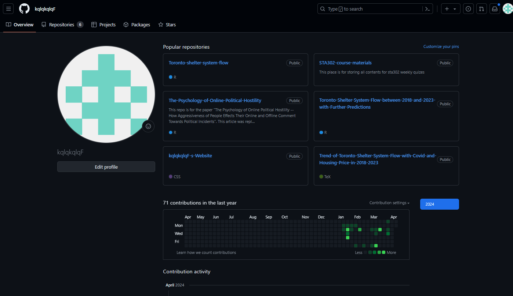
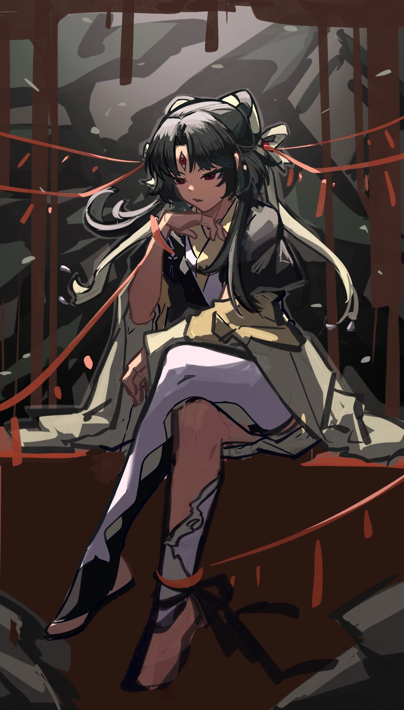
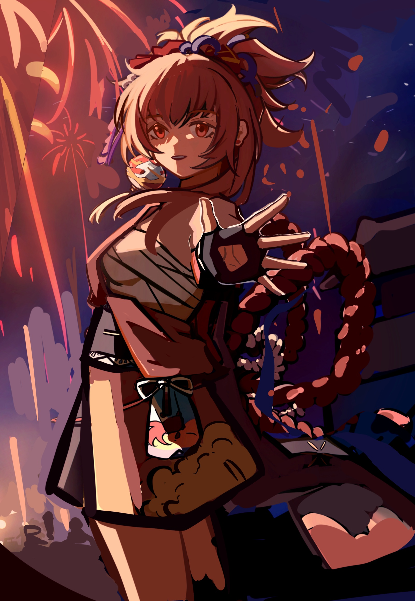
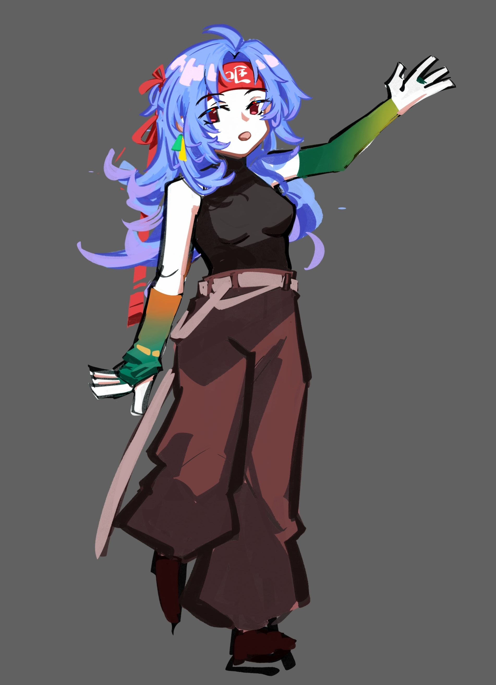
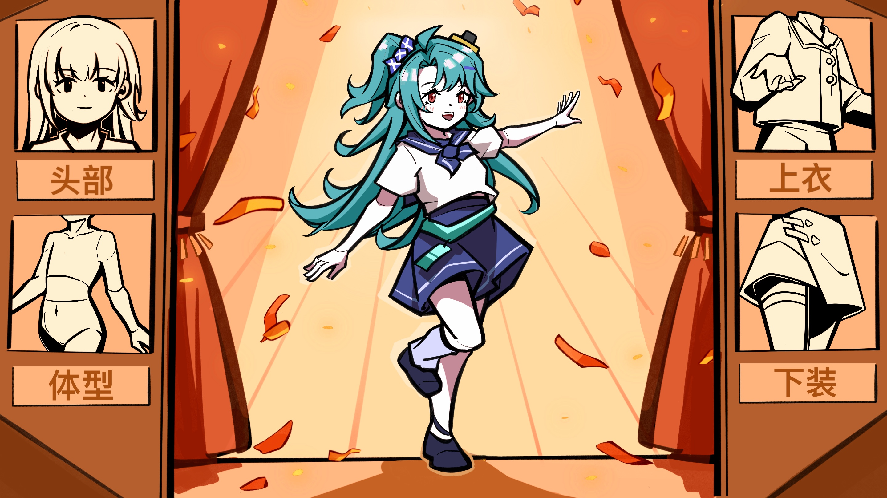
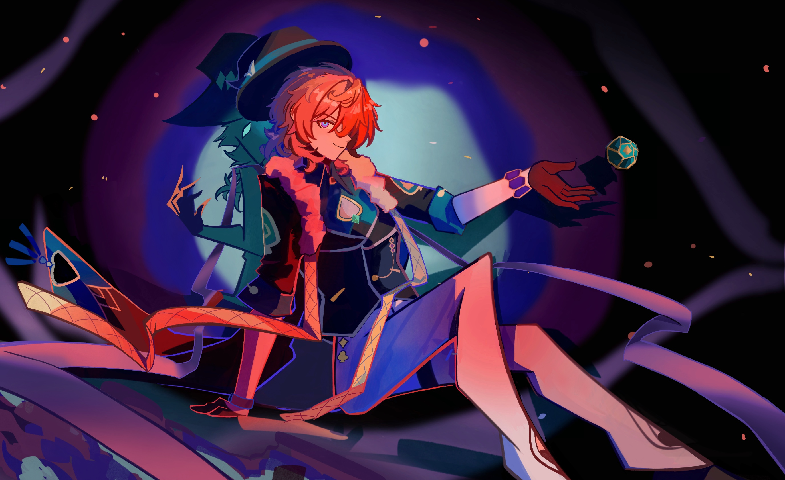

KQLQKQLQF’s Personal Website
Welcome to kqlqkqlqF’s Website!
This is the homepage of kqlqkqlqF’s website. Feel free to explore and enjoy! XD
About Me! (About Us)
—!!! Front row tip: If you want to see something serious, you can completely skip this section of “self-introduction” overflowing with adolescent vibes and go directly to the content below! Believe me, reading it will only make you feel embarrassed! —
I’m kqlqkqlqF, and this website showcases the projects I’ve completed in the past as well as my hobbies and interests… No!!! Of course, I won’t write such boring text on my personal website! Let’s start over with the introduction! (Nice to see this side of you… so bold)
:) Hello there! I’m Yiyi Feng, but you might know me better by my online alias “kqlq”. You can imagine me as a quirky and multifaceted creative enthusiast, best known for opening a mind feast that’s uniquely my own at any time and any place… To put it bluntly, it’s just a mess of thoughts :( (From a higher emotional intelligence standpoint, perhaps it’s just flights of fancy?)
Currently, I’m pursuing a Bachelor’s degree in Genetics and Statistics at the University of Toronto. My curriculum? Oh, just your usual mix of statistics, cell and molecular biology courses. No big deal, right?
Although I have a passion for everything I don’t understand, I’m clearly not your typical science nerd. Sure, I can analyze data like a pro or extract DNA in the lab, but I’ve also worked part-time as a bartender in a cyber bar. Yes, you heard that right—I’m a time management master of mixing drinks and coding! (Please, a little humility…)
When I’m not buried in experiments in the lab or coding in RStudio, you’ll probably see me interacting with my unbridled creativity. From designing original characters on Procreate to creating secondary animation on AE, I hope to present my ideas in the best possible way! (That’s a fair assessment, very much your style)
But wait, there’s more! I’m also a self-taught economist! (You’re blowing your own trumpet a bit too much), a budding chef in the making! (Ask me what culinary masterpieces I’ve made recently), and a beginner learning Japanese! (Why does Japanese grammar have so many uses for one word?) Oh, am I perhaps a bit too fond of boasting about myself?! (Indeed, it’s becoming a bit hard to read) Well, at least I think I’m kind of a big deal. (If you’re not arguing with yourself like a split personality, indeed.)
In a nutshell, I’m just an ordinary university student with a strong desire to explore the unknown and always ready to take positive action. So, fasten your seatbelts and embark on this adventure called life with me—it’s bound to be an exciting journey!
Videos I (We) Made
Video 1
Video 2
Video 3
I (We) regularly post new videos on the Bilibili video platform. Unless there are special circumstances, we aim to update with at least one video every two weeks. Additionally, resources related to the video, such as images and text, will be reformatted and uploaded to other platforms, such as Xiaohongshu and Lofter. The videos I (we) make are primarily derivative works related to anime and manga, including short animations and memes. Original character and world-building videos are also in production, but due to their limited audience appeal compared to derivative works, I (we) plan to increase the release of original character-related videos once we(us) have a larger fanbase.
My (Our) Github Homepage

It contains some papers I (we) have written about data analysis in the past, as well as related code to support this personal website page. The specific uses of the files in each repository are listed in the Readme, so you can quickly understand these messy folders after reading them.
My (Our) Drawings
     
×
(Scroll left/right or up/down to see more works, click on the image to view a high-resolution version)
Some of these drawings are original characters created by me(us), while others are derivative works. Some are created for videos, while others are just illustrations, but all of them were completed within the past year. As my drawing skills still have a lot of room for improvement, I(we) continue to explore and learn new drawing styles.
My (Our) Resume
Just an ordinary resume, presenting the real and serious side of me (us) after returning to life.
If You Want to Contact Me (Us)
If you’ve made it this far without being scared off by my (our) wonderful mental state, feel free to contact us using the following methods! Of course, for me (us), email is the best way to get in touch.
WeChat ID: kqlqkqlq
Phone: (+86) 13718814903 / (+1) 4376843188
Email: kqlqkqlqkqlqkqlq@gmail.com